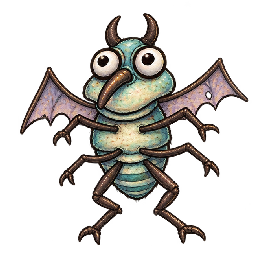
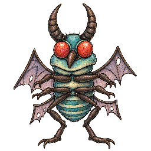
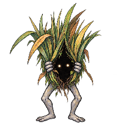
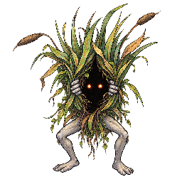
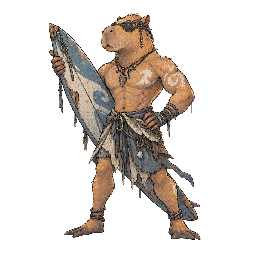
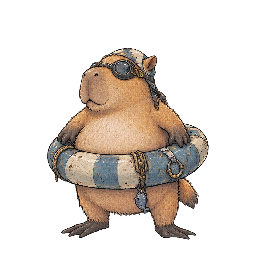

ほのお
- 捕獲率
- 45
- 経験値
- 20
進化
進化元
 Fire Lizardレベル進化
Fire Lizardレベル進化進化先
 Flame Lizardレベル進化
Flame Lizardレベル進化覚える技
| 習得 | 技 | タイプ | 威力 | 命中 | PP | 分類 |
|---|---|---|---|---|---|---|
| Lv.1 | Scratch | ノーマル | 40 | 100 | 35 | 物理 |
| Lv.2 | Flame | ほのお | 40 | 100 | 25 | 特殊 |
| Lv.3 | Scorching Glare | ほのお | 0 | 85 | 15 | 変化 |
| Lv.4 | Flame Fang | ほのお | 70 | 80 | 15 | 物理 |
| Lv.5 | Burning Fist | ほのお | 75 | 100 | 15 | 物理 |
| Lv.7 | Straight Flame | ほのお | 90 | 100 | 15 | 特殊 |
| Lv.9 | Big Fire | ほのお | 110 | 85 | 5 | 特殊 |
| Lv.10 | Reckless Crash | ノーマル | 120 | 100 | 15 | 物理 |
カウンターできる相手
 Blooming Frogタイプ一致の弱点攻撃
Blooming Frogタイプ一致の弱点攻撃Big Fire（ほのお）で弱点2倍（ほか4件）
 Frozen Orbタイプ一致の弱点攻撃
Frozen Orbタイプ一致の弱点攻撃Big Fire（ほのお）で弱点2倍（ほか4件）
 Green Frogタイプ一致の弱点攻撃
Green Frogタイプ一致の弱点攻撃Big Fire（ほのお）で弱点2倍（ほか4件）
 Leaping Frogタイプ一致の弱点攻撃
Leaping Frogタイプ一致の弱点攻撃Big Fire（ほのお）で弱点2倍（ほか4件）

ゼブルタイプ一致の弱点攻撃Big Fire（ほのお）で弱点2倍（ほか4件）

ベルゼブルフライタイプ一致の弱点攻撃Big Fire（ほのお）で弱点2倍（ほか4件）

レッチウィードタイプ一致の弱点攻撃Big Fire（ほのお）で弱点2倍（ほか4件）

レッチドガーデンウィードタイプ一致の弱点攻撃Big Fire（ほのお）で弱点2倍（ほか4件）
カウンターされる相手
 Armored Turtleタイプ一致の弱点攻撃
Armored Turtleタイプ一致の弱点攻撃Powerful Water Pump（みず）で弱点2倍（ほか5件）
 Blue Turtleタイプ一致の弱点攻撃
Blue Turtleタイプ一致の弱点攻撃Powerful Water Pump（みず）で弱点2倍（ほか5件）
 Dirt Burrowerタイプ一致の弱点攻撃
Dirt Burrowerタイプ一致の弱点攻撃Shake Ground（じめん）で弱点2倍（ほか2件）

 Torrent Turtleタイプ一致の弱点攻撃
Torrent Turtleタイプ一致の弱点攻撃Powerful Water Pump（みず）で弱点2倍（ほか5件）

カピバロンタイプ一致の弱点攻撃Waterfall（みず）で弱点2倍（ほか4件）

カピータイプ一致の弱点攻撃Bubble（みず）で弱点2倍（ほか1件）
変更履歴
sha256:6b394a4c9…現在アートワーク変更 / 日本語名変更
sha256:99b750837…アートワーク変更
sha256:cfb4cb96a…初回記録